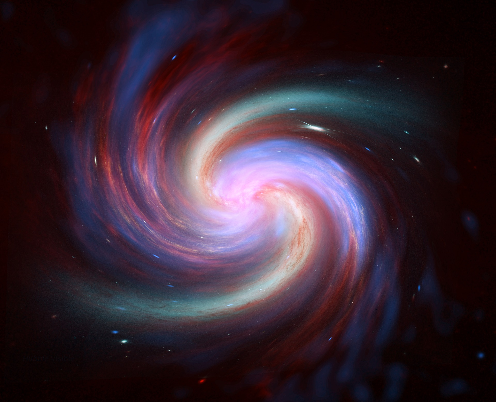

AstroBlog
Home
About
Contact
Search
Search Results for posts (0.03 seconds)
Welcome post
Kartik Mandar
26th May | 2 min read

How the big bang can teach us to declutter our minds!
Kartik Mandar
27th May | 20 min read